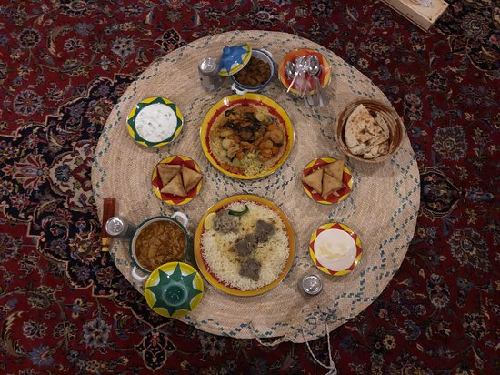
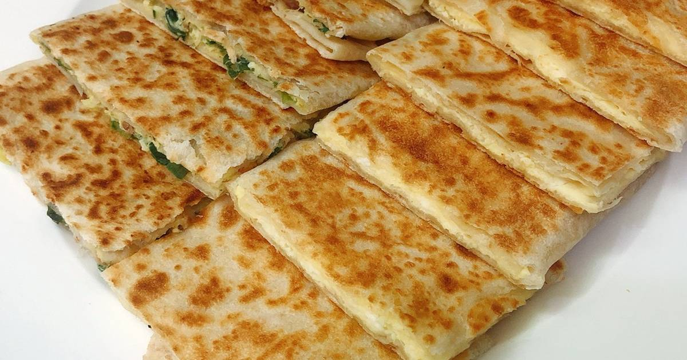
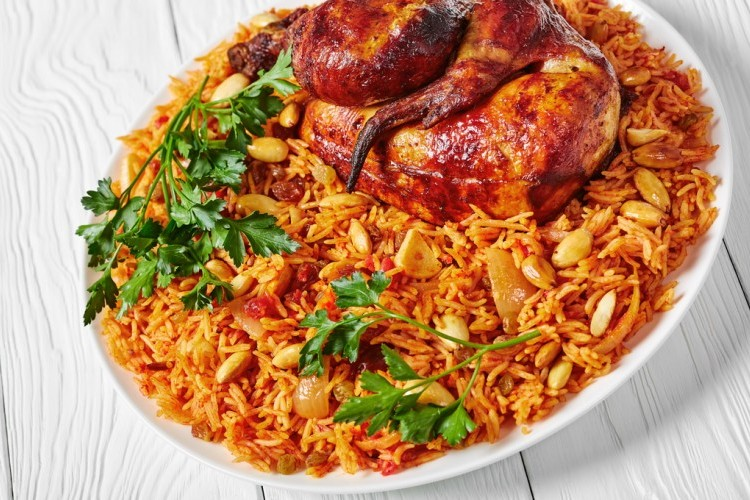
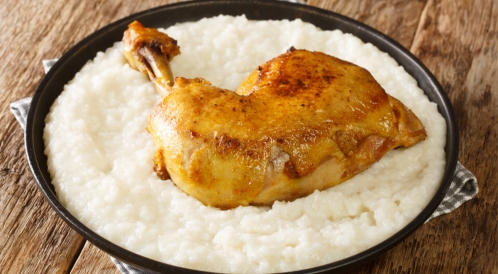
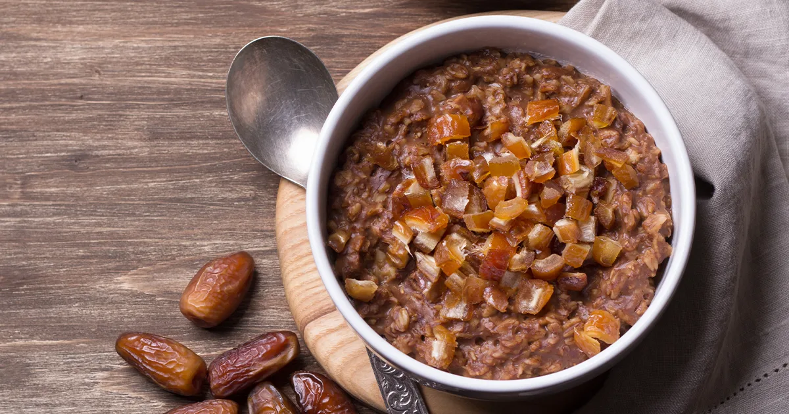

Exploring Food Culture Of Saudi Arabia
One of the exciting things to look forward to when travelling to a new country is checking out
local food and tasting a new cuisine. It is interesting to experience what type of food people
eat in different parts of the world.

1-Mutabbaq
The Arabic name ‘Mutabbaq’ literally means folded. And that’s exactly what this street food is –
a folded, fried pancake stuffed with a lightly spiced mixture of minced meat, eggs, tomatoes and
onions.

2-Kabsa
This traditional dish is a wholesome combination of rice mixed with meat, vegetables, potatoes,
flavoured with spices like black pepper, cloves, cardamom, saffron, black lime, bay leaves and
nutmeg. Considered as the national dish of Saudi Arabia, Kabsa is an intrinsic part of the
region’s culinary heritage.

3- Saleeg
Saleeg is a delicate white rice based dish cooked with broth and milk. It is usually served with
a chilli tomato sauce called ‘duggus’ along with pickled lemons. Saleeg is had as a winter
comfort dish.

Hainini
Hainini is a delicious melt-in-the-mouth dessert made with world-famous Arabian dates. It is a
preparation of flour, butter and dates, mildly spiced with cardamom and saffron. Enjoy this
sweet treat with a steaming cup of Arabic coffee.
